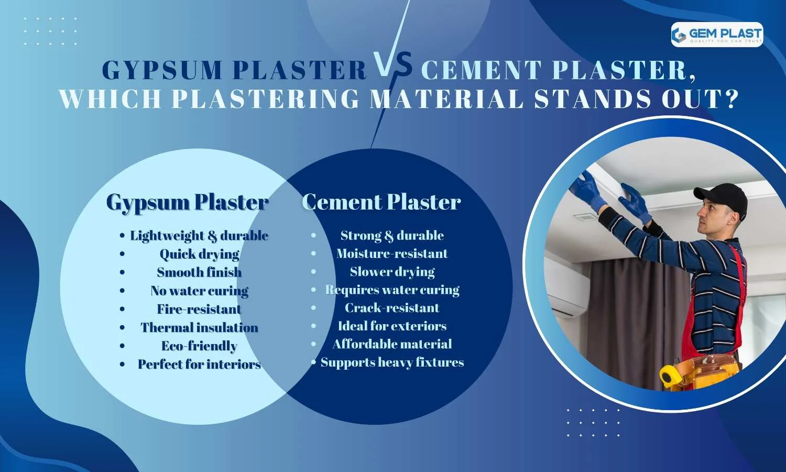
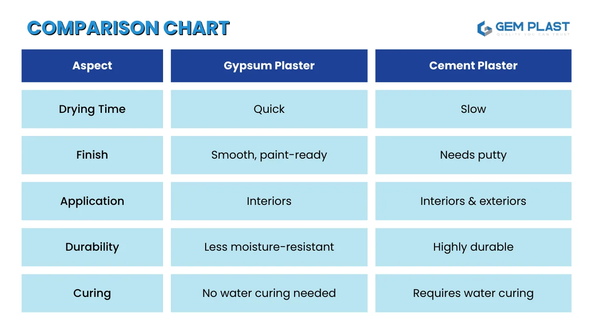
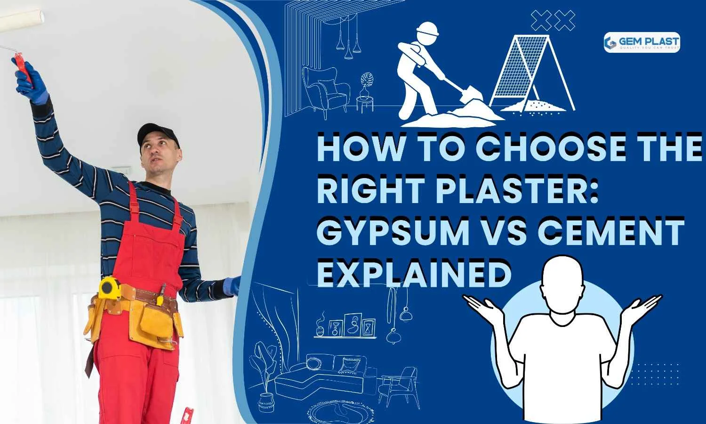

The proper desire to plaster fabric is crucial in ensuring your partitions are visually alluring and operate at their maximum potential. In this publication, we’ll talk about the differences between Gypsum Plaster and Cement Plaster, showcasing the benefits of Gypsum Plaster compared to standard cement. You may also need a more convenient end, fantastic insulation, or a swifter application. Understanding the sizeable distinction between these materials will help you develop a knowledgeable desire for any destiny venture. Find out why gypsum-plasterboard walls are becoming more famous in contemporary creations.
1. What is Gypsum Plastering?
The proper desire to plaster fabric is crucial in ensuring your partitions are visually alluring and operate at their maximum potential. In this publication, we’ll talk about the differences between Gypsum Plaster and Cement Plaster, showcasing the benefits of Gypsum Plaster compared to standard cement. You may also need a more convenient end, fantastic insulation, or a swifter application. Understanding the sizeable distinction between these materials will help you develop a knowledgeable desire for any destiny venture. Find out why gypsum-plasterboard walls are becoming more famous in contemporary creations.
In contrast to traditional cement plaster, it dries faster and provides a smooth and ready-to-paint finish without additional layers. It’s also simpler to apply and does not need water curing, saving energy and time. Additionally, it’s lightweight, which helps reduce the weight of your structure while increasing insulation, making it a sensible and green option for modern interiors.
⦿ Role of Gypsum Plastering in Construction:
• Smooth Finishes: Gypsum plastering can create smooth painted walls for walls made of gypsum. It gives a soft and polished appearance, eliminating the need for additional layers, like putty. It provides a stylish, elegant, sophisticated, premium appearance to walls and ceilings that enhance any room’s look.
• Time-Saving: Among the most significant advantages of gypsum is its speedy drying process. It can dry quicker than conventional cement, significantly reducing construction times and speeding up the process of completing projects.
• Protection: Gypsum plaster is a protective layer for gypsum plaster walls, shielding them from minor cracks and imperfections. Its durable surface maintains the integrity of walls over time, reducing the need for frequent repairs.
• Insulation: Gypsum plaster walls provide enhanced thermal and acoustic insulation, improving the overall comfort of interiors. It gives elegant and glamorous typicality to the wall and ceiling, adding to any space’s look.
• Time-Saving: Among the most significant advantages of gypsum is its speedy drying process. It can dry quicker than conventional cement, significantly reducing construction times and speeding up project completion.
Overall, the benefits of the gypsum plaster make it the ideal material for modern construction. It offers durability as well as efficiency and aesthetic appeal. It also contributes to energy efficiency and sustainability for the environment.
2. Benefits of Gypsum Plastering
• Strengthens Walls: Gypsum plaster improves the resilience of partitions by preventing minor flaws, cracks, or imperfections. Compared to gypsum and cement mortar, gypsum has more flexibility, making it less prone to cracking when stressed. This ensures long-lasting, sturdy partitions that last for a long time. Gypsum plastering in Kerala is an excellent choice for durable and high-quality finishes.
• Smooth Finish: One of the key blessings of gypsum plaster is its capability to provide an unbroken, paint-geared-up floor without additional putty. This clean finish is ideal for contemporary interiors, requiring less attempt for a polished look.
Quick Application: Gypsum plaster v/s cement plaster shows a clear advantage in speed. Gypsum plaster dries much faster than cement plaster, speeding up the project timeline and allowing for quicker completion of construction or renovation projects.
• Dust-Free Repairs: Gypsum plaster is more straightforward to repair with minimal dust and disruption. Unlike traditional cement plaster, repairs are quicker and cleaner, making it less of a hassle during maintenance work.
• Lightweight: Gypsum plaster is extensively lighter than cement plaster, reducing the general structural load on buildings. This characteristic is specifically valuable for modern-day production, where weight reduction is essential for the safety and balance of the shape.
• Thermal & Sound Insulation: The advantages of gypsum plaster extend to its thermal and acoustic properties. It aids in increasing energy efficiency by providing insulation from cold and heat. It also improves the comfort of acoustics by reducing noise, making it the ideal option for commercial and residential areas.
In short, gypsum is a better choice than cement because of the many advantages of gypsum plaster. These include quicker application, smoother finishes, and improved insulation, making it ideal for modern renovation and construction projects.
⦿ Materials: Gypsum Plaster vs Cement Plaster
Gypsum Plaster:
• Faster drying and curing: Gypsum plaster dries fast, substantially decreasing assignment timelines compared to cement plaster. This is why it is appropriate for tasks that require a fast completion of the entire closing level of the project. Gypsum plastering in India is a great choice for efficient and timely construction.
• Perfect for indoor ceilings and partitions: Gypsum plaster partitions provide a smooth and non-stop surface on interior walls and ceilings. It gives an ideal look and does not require extra layers like putty.
• Gives a high-quality, polished appearance: Unlike cement, gypsum provides a smoother, more polished surface, making it easy to maintain and paint. The distinction between gypsum and cement is apparent in the final appearance.
Cement Plaster:
• Requires water curing and longer drying time: Cement plaster requires a longer curing time, which can delay project completion. Curing it in water for several days before it reaches its maximum force is necessary.
• Better suited for exterior walls due to moisture resistance: Because of its superior humidity resistance, cement plaster is usually used for exterior walls where exposure to extreme weather conditions can be problematic. It guards walls against water damage and is less intense than the gypsum plaster.
• A rougher surface finish compared to Gypsum: The cement finish is generally rougher than gypsum plaster, requiring additional work to create a smooth, polished look. This is a significant difference between cement and gypsum.
Gypsum walls are ideal for interiors, providing rapid application and smooth finishes. In contrast, cement plaster is more suitable for exteriors and offers durability and resistance to moisture. They both possess unique characteristics, and what is used in construction depends on the specific needs of the construction.
3. How Does gypsum plastering Compare to Traditional plastering Methods?
• Material: Gypsum walls are constructed of gypsum that has been mixed and is water-based, offering the environment a green and low-cost option. The traditional method of plastering involves cement, sand, and water, making it bulkier and more energy-intensive. One of the advantages of gypsum plasters is their nature-based composition. It is durable and ensures efficiency in construction. How it works makes gypsum plaster a preferred choice for sustainable building solutions.
• Application Speed: Gypsum plaster sets within 4-5 hours, significantly reducing construction time. Cement plaster requires water curing for several days, delaying the process and increasing labor time.
• Finish: Gypsum provides a smooth, even, paint-ready surface, eliminating the need for putty or additional layers. Traditional plaster often leaves a rough finish, requiring extra work for painting or decoration. This smoothness is one of the key advantages of gypsum plaster in achieving polished interiors.
• Durability: Gypsum plaster walls are ideal for interiors, offering excellent durability in dry conditions. But they are vulnerable to water. Cement plaster has enhanced moisture resistance; consequently, using outside partitions and rooms with high humidity is appropriate.
• Eco-Friendly: Gypsum is a herbal and recyclable material. This makes it a sustainable preference with a lower carbon footprint. Cement plaster is more prone to environmental effects because of its high electricity-in-depth manufacturing process.
• Insulation and Weight: Gypsum provides superior thermal and sound insulation. It is light, which helps reduce structural loads. Because it is dense, cement plaster does not offer these insulation benefits and adds additional mass to the building.
In short, gypsum walls are great for modern interiors. They offer pace, smoothness, and sturdiness, which can be the principal blessings of gypsum partitions. Traditional plastering continues to be a nice alternative for outside as well as regions that are susceptible to moisture.
Gypsum plaster v/s cement plaster , Which Material is Best for Plastering?

⦿ Gypsum Plaster
Gypsum powder is a pre-mixed white powder that needs only water for its application. As opposed to more common cement, gypsum mortar is used to create interior ceilings and walls. It provides an even, smooth surface that is paint-ready. The average thickness of gypsum plaster walls is 11 millimeters; for ceilings, it’s 8 millimeters. Different types of gypsum are created by heating gypsum to specific temperatures, which allows for various designs. The distinction between cement and gypsum is apparent when you compare cement plaster with gypsum.
Gypsum plaster quickly dries, requires minimal curing, and is exceptionally light, making it more sustainable. Walls made of Gypsum Plaster are famous for their outstanding fire resistance and thermal insulation qualities. This provides an extra level of security and efficiency. However, cement plaster is a lot heavier and slow to dry and usually requires curing over many days. Overall, gypsum and cement plaster show that gypsum is the best option for interior use, where speed, finish quality, and insulation are essential. In contrast, cement plaster is more suitable for exterior walls that require water resistance and long-lasting durability.
⦿ Cement Plaster
Cement plaster is made from cement and sand in a 1:4 ratio with water and is, therefore, a practical and versatile cloth. It is usually used at a thickness of between 12 and 20mm, which makes it appropriate for internal or external partitions. Cement plaster is ideal for application on the exterior partitions because it’s miles water-proof and forestalls water penetration at the walls.
When comparing Cement Plaster with gypsum plaster, the difference between cement and gypsum becomes quite clear. While gypsum is lightweight, smooth, quick drying, and easy for interior use, cement is stronger, more robust, and more resistant to extreme weather conditions, which makes it the most popular option for exterior walls. It also helps strengthen structures such as block-like hollows made of concrete, resists cracks, and can be used to support fixtures and drilling, making it a viable and long-lasting option for various requirements in construction.
Why is Gypsum plaster better than Cement Plaster?
• 75% Faster Construction: Gypsum plaster sets in just 4 days, compared to the 15 days needed for cement plaster, significantly speeding up project timelines and enabling faster completion.
• 20% Cost Savings: Gypsum plaster walls require less workforce and resources, such as putty and electricity, which reduces overall project costs. This makes it a good option, especially for projects without little capital to invest in quality.
• 35% Lighter: Gypsum plaster is lighter than cement plaster, reducing the load on the building structure. This enhances safety and makes it easier to handle and apply during construction.
• Saves 30 Lit of Water: Unlike cement plaster, which requires water curing for several days, gypsum plaster is air-cured and doesn’t need water, saving up to 30 liters per square meter.
• Paint-Ready Finish: With gypsum plaster, walls achieve a smooth, even, and paint-prepared finish without the want for added putty, providing a graceful, polished surface that calls for much less preservation.
• Eco-Friendly: The benefit of gypsum plaster is that it may be green. This is in brotherly love with gypsum, which is herbal and renewable, and the manufacture of gypsum plaster involves less electricity than cement plaster.
• Fire-Resistant and Insulative: Fire resistance properties accompany gypsum plaster, with thermal and sound insulating qualities that provide comfort and safety to living spaces.
• Lower preservation: Gypsum plaster walls are easier to keep due to their easy floor; at the same time, concrete wall plasters can be extra susceptible to cracks and require standard upkeep.
• Improved indoor air satisfaction: Gypsum cement is a breathable substance that assists in regulating moisture tiers and improves overall air satisfaction within the shape. Meanwhile, cement plaster can keep moisture, increasing mildew if no longer stored directly.
Discover the Advantages of Gypsum Plaster for Premium Wall Finishes
• Smooth Surface for Painting: In contrast to cement plaster, which usually creates rough surfaces that require more work, gypsum plastering walls give a smooth, even surface that is ready for decorating without a need to reapply putty on the surfaces of walls or other surfaces of the building. This produces a sleek and glossy appearance, which is perfect for modern homes.
• Quick Drying Time: The other reason that gypsum plaster is popular is that it mainly dries quickly compared to different types of plaster. Gypsum plaster takes less time to dry than cement plaster, thus reducing the production time and even accelerating the whole process of your project. This means it is more suitable for use, especially in tasks requiring more time than is available.
• Lightweight and Easy to Handle: Gypsum plaster is substantially lighter than cement plaster, making it less challenging to handle and practice. This ease of use translates into faster set-up, decreasing each exertion time and the threat of mistakes at some stage in the application. The lighter fabric additionally puts less pressure on the building structure.
• Fire-Resistant and Safe: Gypsum plaster partitions offer excellent fireplace resistance, imparting further safety in your house or office. Unlike cement plaster, gypsum plaster can assist in sluggish the spread of the hearth, providing you with extra time to react in an emergency.
• Thermal and Sound Insulation: Gypsum plaster enhances thermal and sound insulation, making your dwelling space more strength-efficient and cushy. It facilitates altering indoor temperatures and decreases noise ranges, improving the overall first-class of your indoor environment. This advantage is something cement plaster doesn’t offer in equal quantity.
1. Interior Wall Finishing
Gypsum plaster walls are an excellent option for finishing interior walls with a smooth, perfect surface. They are simple to install and provide better crack resistance than traditional plaster. Because of their ability to improve the overall appearance, the walls made of Gypsum can be used to create an attractive look in bedrooms, living rooms, or offices. In addition, they offer thermal insulation and improve the efficiency of indoor areas.
Feature Comparison: The Difference Between Gypsum and Cement

How to Choose Between Gypsum plaster and Cement plaster

Leave a Comment